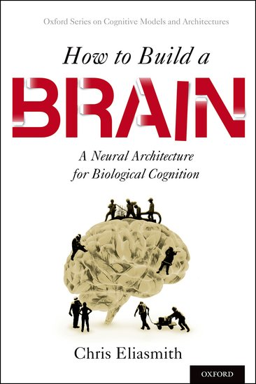

How to Build a Brain¶
 The book How to Build a Brain from Oxford University Press came out in May 2013. It exploits the Neural Engineering Framework (NEF) to develop the Semantic Pointer Architecture (SPA) for cognitive modelling. The book uses Nengo to explain and demonstrate many of the central concepts for these frameworks. This section of the website supports the book by providing links to models, demos, videos, and tutorials mentioned in the book.
The Semantic Pointer Architecture (SPA)¶
Briefly, the semantic pointer hypothesis states:
Higher-level cognitive functions in biological systems are made possible by semantic pointers. Semantic pointers are neural representations that carry partial semantic content and are composable into the representational structures necessary to support complex cognition.
The term ‘semantic pointer’ was chosen because the representations in the architecture are like ‘pointers’ in computer science (insofar as they can be ‘dereferenced’ to access large amounts of information which they do not directly carry). However, they are ‘semantic’ (unlike pointers in computer science) because these representations capture relations in a semantic vector space in virtue of their distances to one another, as typically envisaged by connectionists.
The four main topics in the book that are used to describe the architecture are semantics, syntax, control, and learning and memory. The discussion of semantics considers how semantic pointers are generated from information that impinges on the senses, reproducing details of the spiking tuning curves in the visual system. Syntax is captured by demonstrating how very large structures can be encoded, by binding semantic pointers to one another. The section on control considers the role of the basal ganglia and other structures in routing information throughout the brain to control cognitive tasks. The section on learning memory describes how the SPA includes adaptability (despite this not being a focus of the NEF) showing how detailed spiking timing during learning can be incorporated into the basal ganglia model using a biologically plausible STDP-like rule.
An example¶
In chapter 7 of the book, the SPA Unified Network (Spaun) model is presented that demonstrates how a wide variety of (about 8) cognitive and non-cognitive tasks can be integrated in a single large-scale, spiking neuron model. Spaun switches tasks and provides all responses without any manual change in parameters from a programmer. Essentially, it is a fixed model that integrates perception, cognition, and action across several different tasks (many of which are described elsewhere on this site). Spaun is the most complex example of an SPA model to date (see figure 1).
Figure 1: A high-level depiction of the Spaun model, with all of the central features of a general Semantic Pointer Architecture. Visual and motor hierarchies provide semantics via connections to natural input (images) and output (a nonlinear dynamical arm model). Central information manipulation depends on syntactic structure for several tasks. Control is largely captured by the basal ganglia action selection elements. Memory and learning take place in both basal ganglia and cortex. The model itself consists of just under a million spiking neurons.
Let us consider how the model would run on one run of one cognitive task (see a video of Spaun performing this task). This task is analogous to the Raven’s Matrix task, which requires people to figure out a pattern in the input, and apply that pattern to new input to produce novel output. For instance given the following input “[1] [11] [111] [2] [22] [222] [3] [33] ?” the expected answer is 333. The input to the model first indicates which task it is going to perform by presenting it with an ‘A’ followed by the task number (e.g. ‘A 7’ for this task). Then it is shown a series of letters and brackets and it has to draw the correct answer with its arm. The processing for such a task goes something like this:
- The image impacts the visual system, and the neurons transform the raw image input (784 dimensions) to a lower dimensional (50 dimensions) semantic pointer that preserves central visual features. This is done using a visual hierarchy model (i.e., V1-V2-V4-IT) that implements a learned statistical compression.
- The visual semantic pointer is mapped to a conceptual semantic pointer by an associative memory, and stored in a working memory. Storing semantic pointers is performed by binding them to other semantic pointers that are used to encode the order the information is presented in (e.g. to distinguish 1 2 from 2 1).
- In this task, the semantic pointers generated by consecutive sets of inputs are compared with each other to infer what relationship there exists (e.g. between 1 and 11; or 22 and 222).
- The shared transformation across all the input is determined by averaging the previously inferred relationships across all sets of inputs (so the inferred relationship between 1 and 11 is averaged with that between 22 and 222, and so on).
- When the ‘?’ is encountered, Spaun determines its answer by taking the average relationship and applying it to the last input (i.e., 33) to generate an internal representation of the answer.
- This representation is then used to drive the motor system to write out the correct answer (see figure 2b), by sending the relevant semantic pointers to the motor system.
- The motor system ‘dereferences’ the semantic pointer by going down the motor hierarchy to generate appropriate control signals for a high-degree of freedom physical arm model.

Figure 2: Example input and output from Spaun. a) Handwritten numbers used as input. b) Numbers drawn by Spaun using its arm.
All of the control-like steps (e.g. ‘compared with’, ‘inferred’, and routing information through the system) are implemented by a biologically plausible basal ganglia model. This is one example of the 8 different tasks that Spaun is able to perform. Videos for all tasks can be found here.
Book reviews¶
Here is a list of reviews we’ve found that talk about the book (please post any other reviews you find on the forum and we’ll add them here):
- Hot Thought Psychology Today blog by Paul Thagard